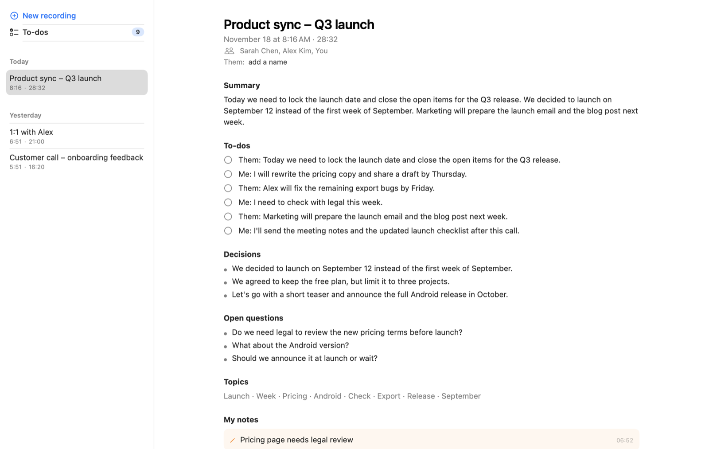
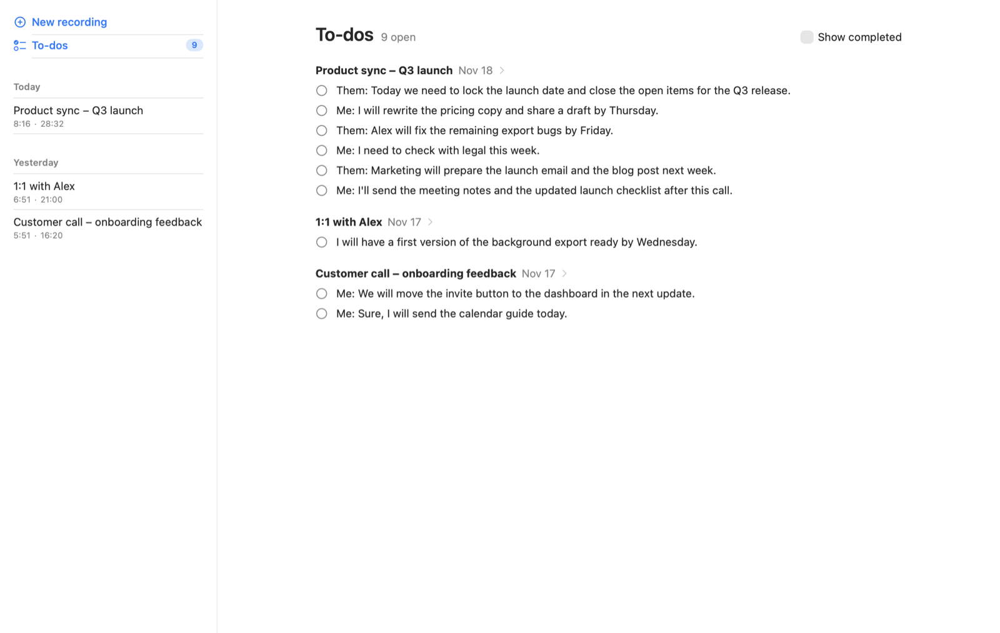

Meeting notes that stay on your Mac.
Offrecord records your calls and meetings, transcribes them on-device and writes the summary, decisions and to-dos for you. It works with Zoom, Google Meet, Teams or any call app, and no bot ever joins your meeting.

From call to notes in one meeting
Press record, or let Offrecord ask
Start with ⌃⌥R from anywhere or the menu bar. When another app opens your microphone for a call, Offrecord offers to record, and it stops by itself when the call ends.
Both sides of the call, captured locally
Your microphone gets Apple's voice processing; the other side comes from system audio. Audio is written to disk as you talk, so a crash never costs you the meeting.
Transcript as you speak
Apple's on-device SpeechAnalyzer transcribes in real time, labelled Me and Them. Type notes or press ⌘B to bookmark a moment.
Notes, ready when you stop
A summary, decisions, action items and open questions, written by Apple Intelligence on-device or by local rules. Saved as Markdown next to your audio.
Everything a meeting assistant does, minus the server
Any call app, or in person
Zoom, Meet, Teams, Slack, WhatsApp, FaceTime. Optional screen recording too.
Live transcription
Speaker labels and every language Apple's speech recognition supports, Turkish included.
Automatic notes
Summary, key topics, decisions, action items and open questions after every meeting.
One to-do list
Action items from all your meetings in one place, with checkboxes.
Crash-safe
If the app or your Mac stops mid-meeting, the recording is recovered on next launch.
Plain files you own
audio.m4a, notes.md and JSON in a folder you choose. Search everything inside the app.
Stays out of the way of your call
A small floating bar sits above every app with the timer, levels, a note field and the stop button. The full transcript is one click away.
- Pause and resume with ⇧⌘P
- Mark key moments with ⌘B
- Calendar-aware titles and attendees


Every promise, in one list
Offrecord pulls the action items out of each meeting and keeps them together, so "I'll send that by Thursday" doesn't get lost.

A private alternative to cloud note takers
Otter.ai, Fireflies, Fathom and Granola are good products, but they process your conversations on their servers. Offrecord does the same job on your own Mac.
| Offrecord | Typical cloud note taker | |
|---|---|---|
| Where audio is processed | On your Mac | Vendor's servers |
| Bot joins your meeting | No | Often |
| Works with any call app or in person | Yes | Usually specific platforms |
| Account required | No | Yes |
| Price | Free, open source | Monthly subscription |
| Your files | Audio, Markdown, JSON in your folder | Inside the vendor's app |
Build it on your Mac in about a minute
Offrecord is distributed as source. One script checks your Mac, creates a local signing certificate so macOS remembers permissions, builds the app and puts it in your Applications folder. No Apple Developer account, no Gatekeeper warning.
$ git clone https://github.com/RamazanBakir/offrecord.git $ cd offrecord $ ./scripts/install.sh
xcode-select --installgit pull && ./scripts/install.shQuestions
Does Offrecord send my recordings to the cloud?
No. Recording, transcription and note generation all run on your Mac. The app makes no network requests of its own; macOS may download Apple's speech model for a language the first time you use it.
Does it join my Zoom, Google Meet or Teams call as a bot?
No. It records your Mac's microphone and system audio, so it works with any call app and other participants see nothing new.
Do I need Apple Intelligence?
No. With Apple Intelligence on and a supported language, Apple's on-device model writes the notes. Otherwise a local rule-based extractor is used.
Which languages can it transcribe?
Every language Apple's on-device speech recognition supports on your Mac. The interface is in English and Turkish.
Why macOS 26 and Apple silicon only?
The on-device transcription engine, SpeechAnalyzer, was introduced in macOS 26.
Why isn't there a downloadable app?
Offrecord isn't notarized yet, so building from source is the simplest way to run it without security warnings. The install script makes it one command.
Is it legal to record calls?
Laws differ between countries and states, and many require everyone's consent. Tell people when you record and follow the rules that apply to you.
Your meetings, off the record.
Free, open source and built on Apple's own frameworks. Star the repo to follow releases, or open an issue with ideas and bugs.